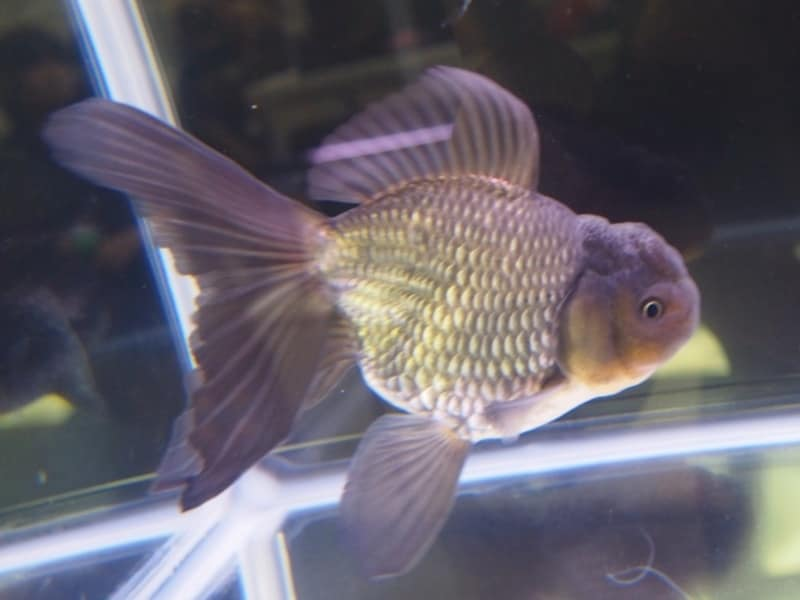
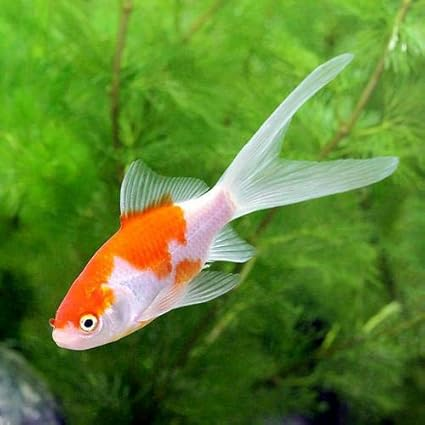
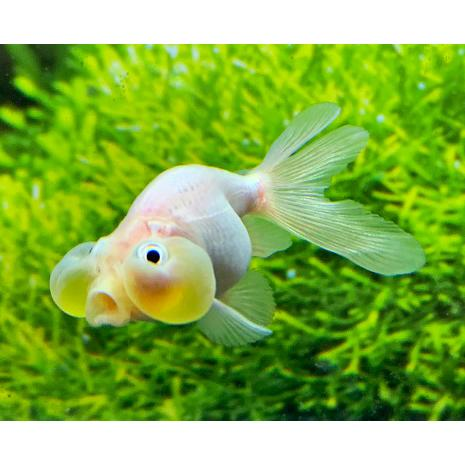
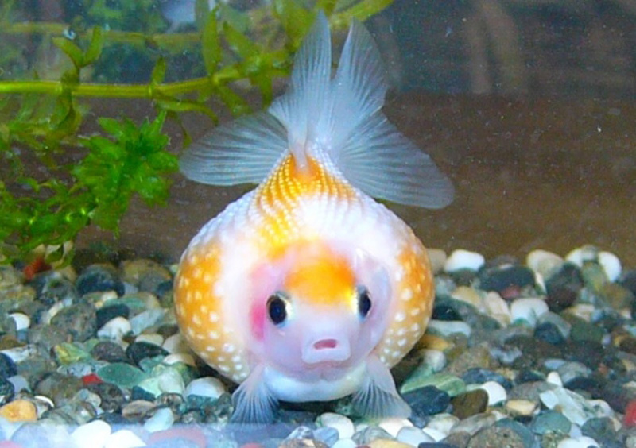

🎨 金魚のしゅるい
- 和金： ふつうの体型、げんきでかいやすい
- 琉金： まるい体、ながいヒレ
- 出目金： 目がとび出ている
- 丹頂： あたまに赤いもよう
- ランチュウ： せびれがなくて、まるい
-
オランダ獅子頭： あたまにこぶのようなふくらみ

-
コメット： 細長い体、尾びれが長い

-
水泡眼： 目のしたに大きな水ぶくれがある、やさしくあつかってね

-
ピンポンパール： まんまるい体、しんじゅのようなうろこ

🏠 金魚のかいかた
- 水そうのじゅんび： 30cmいじょうの大きさ、フィルターやエアレーションもようい
- 水のじゅんび： カルキぬきをつかって水をきれいに
- 金魚をいれるとき： すぐに水にいれず、30分うかべてなじませる
- エサのあげかた： 1日1〜2回、3分で食べきれるりょう
- 水かえ： しゅう1かい、水の1/3〜1/2をとりかえる
❗ びょうきにしないためのポイント
- 水をきれいに保つ（ろかそうち＋水かえ）
- エサのあげすぎに注意
- 水温のへんかに気をつける（20～26℃）
- とがった石やかざりを入れない
📋 まとめ
| やること |
目安 |
| エサやり |
1日1〜2回 |
| 水かえ |
週に1回（1/3〜1/2） |
| そうじ |
月に1回 フィルター |
| 水温 |
20〜26℃がベスト |